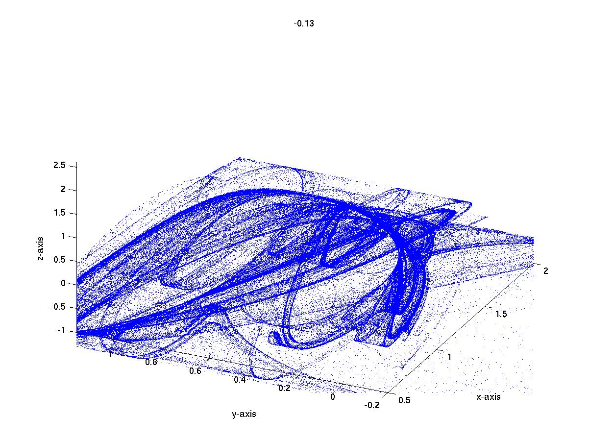

A Three-dimensional Explosion:
A discontinuous change in the recurrent set

Click to see attractor movie
Crises of a chaotic attractors are discontinuous changes in the size
of an attractor as a parameter is varied. Crises are the most easily
observed and most often described global bifurcations. More general
than a crisis is an explosion: A discontinuous change in the recurrent
set. The above attractor was described in a 2006 Physical Review
Letters paper. It displays a crisis and an explosion in three
dimensions between the parameters -.12 and -.14 (listed at the top of
the image). That is, the attractor gets much larger between these two
values, though the density of the new part of the attractor is low. We
can compute the way in which the density changes as the parameter
changes. The red and green points are fixed points with different
numbers of unstable directions. The bifurcation occurs exactly when
the red fixed point becomes part of the attractor, a phenomenon known
as unstable dimension variability.
This is the picture. The thousand words (reference below)
give further details of how this leads to unstable dimension
variability, as well as giving scaling arguments for the density of
the new part of the attractor after bifurcation.
Credits:
Starring: Crossing bifurcation with a twist
Director: Evelyn Sander
Filmed on location in three dimensions
This attractor appeared in a paper of Kathy Alligood, Evelyn Sander,
and Jim Yorke
Three-dimensional
crisis: Crossing bifurcations and unstable dimension
variability. Phys. Rev. Lett. 96, 244103 (2006).
Copyright 2007, all rights reserved.